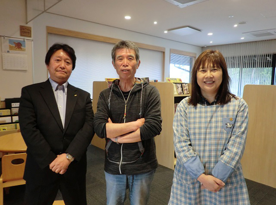
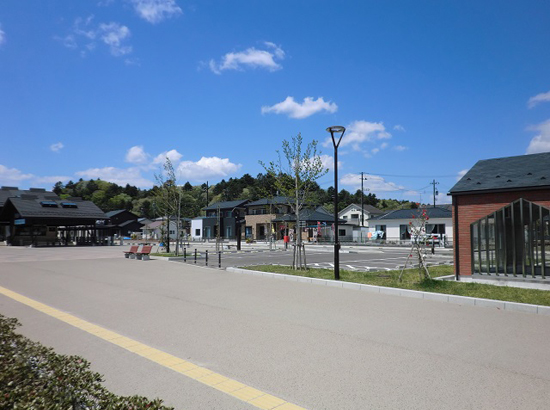

被災地のいま 宮城県・福島県の現状
3.11を忘れない・・
みやぎ生協から被災地・宮城のいまをお伝えします
第70回 2019年6月5日 ―まち・住まい・コミュニティ―
「多様なチャンネルを活用して、居場所を見つけられる街に」
宮城県東松島市野蒜まちづくり協議会
野蒜駅の改札を出ると、広場の向こうに野蒜ケ丘の新しい街並みが広がっています。
津波で甚大な被害をうけた東松島市野蒜地区では、多くの世帯が近くの山林を開いて造った高台へ集団移転しました。2017年10月にはまちびらきが行なわれています。
野蒜まちづくり協議会（以下まち協）は、住民参加のまちづくりを目指し、野蒜ケ丘の3自治会や東名・大塚など旧市街地の5自治会と協力しながら、様々な事業に取り組んでいます。
移転にあたって課題になったのがコミュニティ形成でした。まち協会長の菅原節郎さんは、「野蒜ケ丘は震災前のコミュニティを活かす形で移転したことや何度も話し合いを重ねたことで、“この街でこの人たちと暮らしていくんだ”という気持ちが醸成された。移転後も自治会ごとにイベントを開催し、それがコミュニティの活性化に役立っている」と話します。
最近は野蒜ケ丘の分譲地を買って移り住む若い世帯も増えてきました。一方、災害公営住宅や旧市街地を中心に高齢化も進んでいます。
まち協副会長の山縣嘉恵さんは「自治会のイベントに参加できない人もいる。そうした人々を含め、住民の地域での居場所づくりがまち協の役目になる」と言います。
同じくまち協副会長の佐賀剛さんも「地域全体のあり方を考え、若い世代が住みやすい街づくりや人材育成が大切になってくる」とこれからを見すえます。
まち協では、昨年度開催した地域づくり勉強会や若い母親のためのママカフェを、今後も行う予定です。
「ママカフェは市民センターの交流スペースを活用し、お母さんたちが子どもを遊ばせながらお茶を飲んだり、保健師さんや保育士さんに子育てについて相談したりする場」と山縣さん。地域づくり勉強会も「野蒜の街を知り、地域を担っていく人材を育てていくためのもの。今後も外部から講師を呼ぶなどして学ぶ機会をつくりたい」（佐賀さん）と積極的です。
菅原さんは「すべての住民が自分の役割や出番があるような街にしたい」との思いを抱いています。「そのためには人と人のつながりが数多くあった方がいい。自治会ごとの交流だけでなく、ママカフェや勉強会、趣味のグループなど様々なチャンネルを活用して、自分の居場所を見つけてほしい」。
もともと住民同士の付き合いが活発だった野蒜地区には、コミュニティの芯となる助け合いの習慣が今も根付いています。
まち協の住民参加のまちづくりは、そうした故郷の財産を活かしながら、今後も進められていきます。

▲野蒜まちづくり協議会の皆さん。
左から副会長の佐賀剛さん、会長の菅原節郎さん、副会長の山縣嘉恵さん。

▲震災後、高台に移設されたJR仙石線野蒜駅。広場のすぐ先に観光物産交流センターや市民センターがあります。
2019年3月21日、みやぎ生協はコープふくしま・福島県南生協と組織合同しました。このコーナーのタイトルも「被災地のいま みやぎ生協・コープふくしまから宮城・福島のいまをお伝えします」に変え、福島県の現状についてもお伝えしていきます。
前の記事
第69回「―復興を担う女性たち―「南三陸町の漁業者の思い、町の魅力を伝えたい」たみこの海パック」（2019年5月5日）